5 人脸识别模型
实现方式：首先利用MTCNN实现图片中人脸的检测并进行对齐，再利用FaceNet将检测到的人脸和数据库存储的人脸进行比对，从而实现人脸识别。
本章实现人脸识别的具体流程：
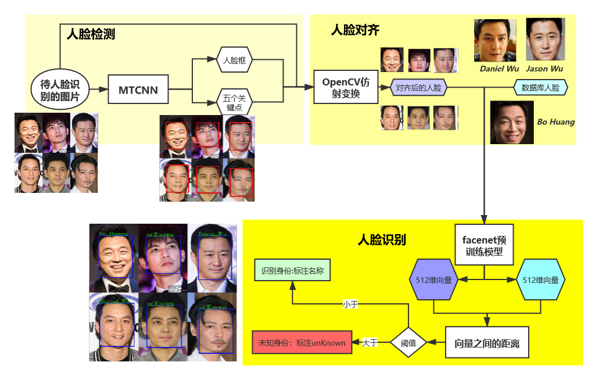
5.1 MTCNN
激活虚拟环境，运行pip install mtcnn。
5.1.1 人脸检测
下面是MTCNN针对检测到的一个人脸的输出。在输出人脸框坐标的同时，也会输出两只眼睛，鼻子和嘴巴的左、右五个关键点的像素坐标：
{'box': [711, 205, 202, 180], 'confidence': 0.9637635946273804, 'keypoints': {'left_eye': (823, 274), 'right_eye': (834, 327), 'nose': (795, 300), 'mouth_left': (762, 293), 'mouth_right': (767, 337)}}
python程序
#!/usr/bin/env python
# author:AnFany
# datetime:2020/12/24 17:40
# 利用mtcnn实现图片中人脸的检测
from mtcnn.mtcnn import MTCNN
import cv2
import os
# 输入图片路径
IN_Figure_Path = r'C:\Users\Administrator\Desktop\mtcnn_figure\mtcnn_in'
# 输出图片路径
OUT_Figure_Path = r'C:\Users\Administrator\Desktop\mtcnn_figure\mtcnn_out'
# 进行人脸检测的函数
def mtcnn_face_detection(inp=IN_Figure_Path, outp=OUT_Figure_Path, boxcolor=(220, 20, 20),
keypointcolor=(20, 220, 20),boxw=3):
"""
:param inp: 需要进行人脸检测的图片的路径
:param outp: 检测后的输出路径
:param boxcolor: (255,0,0) 对应rgb，检测框的颜色
:param keypointcolor: (255,0,0) 对应rgb，检测框的颜色
:param boxw: 检测框的宽度
:return: 带有检测框的图片
"""
# 人脸检测模型
detector = MTCNN()
for fig in os.listdir(inp):
# 因为cv2读取的图片数据是bgr的，模型的输入是rgb的
img_data = cv2.cvtColor(cv2.imread(r'%s/%s' %(inp, fig)), cv2.COLOR_BGR2RGB)
# 检测结果
result_detection = detector.detect_faces(img_data)
# 判断是否检测出人脸
if result_detection:
for face in result_detection:
# 获取框的像素坐标
minx, miny, width, height = face['box']
maxx, maxy = minx+width, miny + height
# 加上人脸框
face_data = cv2.rectangle(img_data, (minx, miny), (maxx, maxy), boxcolor, boxw)
# 加上五关键点
for k in ['left_eye', 'right_eye', 'nose', 'mouth_left', 'mouth_right']:
face_data = cv2.circle(face_data, face['keypoints'][k], radius=0,
color=keypointcolor, thickness=boxw*2)
# 数据通道在变回去
face_data = cv2.cvtColor(face_data, cv2.COLOR_RGB2BGR)
# 保存图片
name = ''.join(fig.split('.')[:-1])
cv2.imwrite(r'%s/%s.png' % (outp, name), face_data, [int(cv2.IMWRITE_JPEG_QUALITY), 100])
return print('人脸检测完毕')
mtcnn_face_detection()
示图：
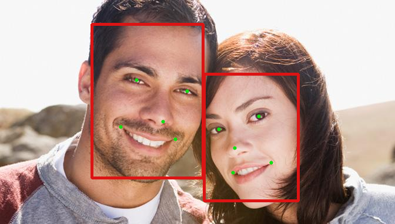
5.1.2 人脸对齐
激活虚拟环境，运行命令pip install scikit-image。需要根据五个关键点的像素坐标，以及标准正脸各个关键点的坐标计算仿射变换的矩阵，然后对图片进行裁剪，得到"正脸"。
python程序
#!/usr/bin/env python
# author:AnFany
# datetime:2020/12/28 10:03
# 在人脸识别的基础上将输出的人脸进行对齐校正
from mtcnn.mtcnn import MTCNN
import cv2
import os
import numpy as np
from skimage import transform as trans
# 输入图片路径
IN_Figure_Path = r'C:\Users\Administrator\Desktop\mtcnn_figure\mtcnn_in'
# 输出图片路径
OUT_Figure_Path = r'C:\Users\Administrator\Desktop\mtcnn_figure\mtcnn_out'
# 正脸按照112*112的尺寸，此时左眼、右眼、鼻子、嘴巴左边、右边的坐标为
KeyPoints = np.array([(38.2946, 51.6963),
(73.5318, 51.6963),
(56.0252, 71.7366),
(41.5493, 92.3655),
(70.7299, 92.3655)])
# 进行人脸检测的函数
def mtcnn_face_detection_align(inp=IN_Figure_Path, outp=OUT_Figure_Path,
boxcolor=(220, 20, 20), boxw=3, dst_data=KeyPoints, figsize=(112, 112)):
"""
:param inp: 需要进行人脸检测的图片的路径
:param outp: 检测后的输出路径
:param boxcolor: (220, 20, 20) 对应rgb，检测框的颜色
:param boxw: 检测框的宽度
:param dst_data: 112*112 的正脸中关键点的坐标
:param figsize: 图片尺寸112*112
:return: 人脸对齐后的图片
"""
# 人脸检测模型
detector = MTCNN()
for fig in os.listdir(inp):
# 因为cv2读取的图片数据是bgr的，模型的输入是rgb的
img_data = cv2.cvtColor(cv2.imread(r'%s/%s' %(inp, fig)), cv2.COLOR_BGR2RGB)
# 检测结果
result_detection = detector.detect_faces(img_data)
# 判断是否检测出人脸
name = ''.join(fig.split('.')[:-1])
if result_detection:
face_count = 1 # 人脸数量
face_set = []
for face in result_detection:
# 获取框的像素坐标
minx, miny, width, height = face['box']
maxx, maxy = minx+width, miny + height
# 保存人脸框
face_set.append([[minx, miny], [maxx, maxy]])
# 将检测到的人脸图片截取下来
face_detection_data = img_data[miny:maxy,minx:maxx, :]
face_detection_data = cv2.cvtColor(face_detection_data, cv2.COLOR_RGB2BGR)
# 保存截取到的人脸
cv2.imwrite(r'%s/%s_%s.png' % (outp, name, face_count), face_detection_data, [int(cv2.IMWRITE_JPEG_QUALITY), 100])
# 获得五个关键点的坐标
src_data = []
for k in ['left_eye','right_eye','nose','mouth_left','mouth_right']:
src_data.append(face['keypoints'][k])
# 计算放射矩阵
tform = trans.SimilarityTransform()
res = tform.estimate(np.array(src_data), dst_data)
M = tform.params
# 应用仿射矩阵进行人脸对齐
align_face_data = cv2.warpAffine(img_data.copy(), M[:2,:], figsize,
flags=cv2.INTER_CUBIC, borderValue=(255,255,255))
align_face_data = cv2.cvtColor(align_face_data, cv2.COLOR_RGB2BGR)
cv2.imwrite(r'%s/%s_%s_align.png' % (outp, name, face_count), align_face_data,
[int(cv2.IMWRITE_JPEG_QUALITY), 100])
face_count += 1
for fb in face_set:
# 加上人脸框
face_data = cv2.rectangle(img_data, tuple(fb[0]), tuple(fb[1]), boxcolor, boxw)
# 数据通道在变回去
face_data = cv2.cvtColor(face_data, cv2.COLOR_RGB2BGR)
# 保存带有人脸框的图片
cv2.imwrite(r'%s/%s.png' % (outp, name), face_data, [int(cv2.IMWRITE_JPEG_QUALITY), 100])
return print('人脸检测完毕')
mtcnn_face_detection_align()
截取到的人脸
对齐后：
截取到的人脸
对齐后
5.2 FaceNet
5.2.1 下载FaceNet源码
新建一个文件夹，在该文件夹内点击Git Bash Here，运行 git clone https://github.com/davidsandberg/facenet.git。
如果下载失败，可以多试试几次。
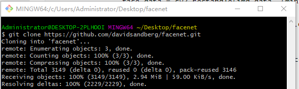
成功后，将新生成的文件夹facenet，
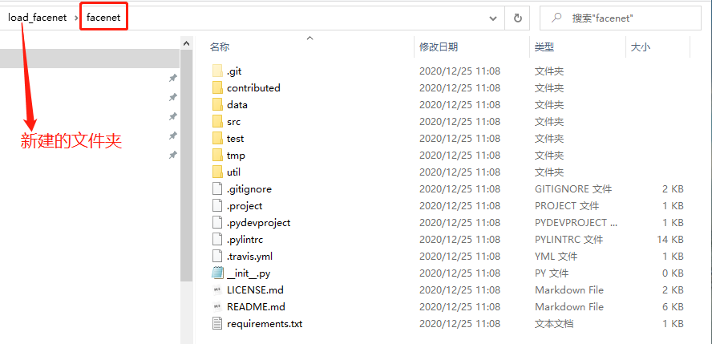
移动到虚拟环境安装的包的路径中：
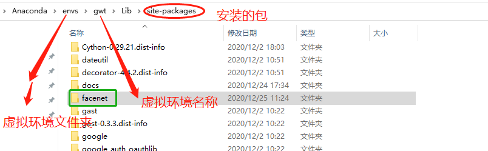
验证
出现错误
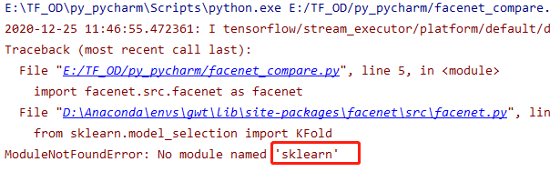
激活虚拟环境，运行pip install scikit-learn
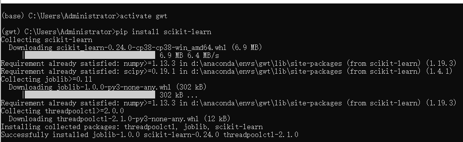
5.2.2 下载预训练模型
模型网址https://github.com/davidsandberg/facenet，
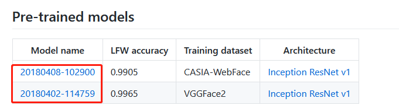
因为模型在谷歌云盘上，需要翻墙下载，下面给出两个模型的百度网盘下载地址：
- 20180408-102900
链接：https://pan.baidu.com/s/1fLKmJojLo8U8TLnREncxIw 提取码：1whr
- 20180402-114759
链接：https://pan.baidu.com/s/1QbwbDnVHfbIPZgM3mVlhKA 提取码：y7fr
5.2.3 人脸数据库
将对齐后的图片输入到预训练模型中，获得模型输出的512维向量，在计算向量之间的相似度(欧式距离和余弦相似)。
5.2.3.1 建立人脸数据库
收集需要识别的人的3-5张不同角度的图片，作为人脸数据库的原始图片。根据原始图片建立人脸图片数据。
python程序
#!/usr/bin/env python
# author:AnFany
# datetime:2020/12/30 13:44
# 根据人脸数据库原始图片存储的每个人的照片，建立人脸图片数据
from mtcnn.mtcnn import MTCNN
import cv2
import os
import numpy as np
from skimage import transform as trans
import shutil
# 人脸数据库路径
DataBase_Figure_Path = r'E:\facenet_database'
# 存放每个人的原始图片文件夹
Origin_Name = 'origin_fig'
# 不同尺寸下人脸左眼、右眼、鼻子、左嘴角、右嘴角的坐标的对应关系
Size_KeyPoints = {'1': [(112, 112), np.array([(38.2946, 51.6963),
(73.5318, 51.6963),
(56.0252, 71.7366),
(41.5493, 92.3655),
(70.7299, 92.3655)])],
'2': [(96, 96), np.array([(30.2946, 43.6963),
(65.5318, 43.6963),
(48.0252, 63.7366),
(33.5493, 84.3655),
(62.7299, 84.3655)])]}
# 建立每个人的人脸图片
def build_face_person_database(inp=DataBase_Figure_Path, oname=Origin_Name, dst_data=Size_KeyPoints):
# 首先建立人脸文件夹
face_path = os.path.join(inp, 'face_fig')
if 'face_fig' in os.listdir(inp):
shutil.rmtree(face_path)
os.mkdir(face_path)
else:
os.mkdir(face_path)
# 人脸检测模型
detector = MTCNN()
# 开始遍历原始图片
originfigpath = os.path.join(inp, oname)
# 遍历每个人的文件夹
for fol in os.listdir(originfigpath):
# 新建文件夹
new_face_path = os.path.join(face_path, fol)
if not os.path.exists(new_face_path):
os.mkdir(new_face_path)
# 遍历每个图片
person_file = os.path.join(originfigpath, fol)
for per in os.listdir(person_file):
fig_path = os.path.join(person_file, per)
# 人脸检测模型
# 因为cv2读取的图片数据是bgr的，模型的输入是rgb的
img_data = cv2.cvtColor(cv2.imread(fig_path), cv2.COLOR_BGR2RGB)
# 检测结果
result_detection = detector.detect_faces(img_data)
# 判断是否检测出人脸
name = ''.join(per.split('.')[:-1])
if result_detection:
face_count = 1 # 人脸数量
face_set = []
for face in result_detection:
# 获取框的像素坐标
minx, miny, width, height = face['box']
maxx, maxy = minx+width, miny + height
# 保存人脸框
face_set.append([[minx, miny], [maxx, maxy]])
# 将检测到的人脸图片截取下来
face_detection_data = img_data[miny:maxy,minx:maxx, :]
face_detection_data = cv2.cvtColor(face_detection_data, cv2.COLOR_RGB2BGR)
# 获得五个关键点的坐标
src_data = []
for k in ['left_eye','right_eye','nose','mouth_left','mouth_right']:
src_data.append(face['keypoints'][k])
# 计算放射矩阵
tform = trans.SimilarityTransform()
# 遍历不同的正脸尺寸
for d in dst_data:
fsize, kdata = dst_data[d]
res = tform.estimate(np.array(src_data), kdata)
M = tform.params
# 应用仿射矩阵进行人脸对齐
align_face_data = cv2.warpAffine(img_data.copy(), M[:2,:], fsize,
flags=cv2.INTER_CUBIC, borderValue=(255,255,255))
# 转化通道
align_face_data = cv2.cvtColor(align_face_data, cv2.COLOR_RGB2BGR)
# 保存图片
cv2.imwrite(r'%s/%s_%s_%s_%s.png' % (new_face_path, d, fol, face_count,name), align_face_data,
[int(cv2.IMWRITE_JPEG_QUALITY), 100])
face_count += 1
return print('人脸数据库生成完毕')
build_face_person_database()
建成的人脸数据库文件夹，包括原始图片和人脸图片文件夹，并且每个文件夹均包括每个人照片的独立文件夹。如下图所示
5.2.3.2 数据库人脸编码
对数据库中的人脸进行编码并存为json文件，json文件格式如下：
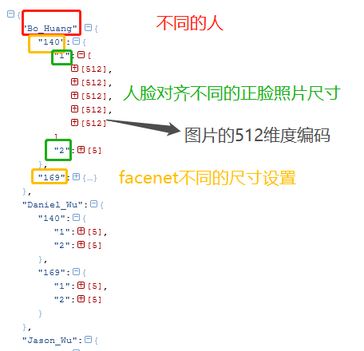
python程序
#!/usr/bin/env python
# author:AnFany
# datetime:2020/12/30 14:38
# 对数据库中的人脸进行编码并存为jason文件
# facenet是基于tensorflow1.x版本的
import tensorflow.compat.v1 as tf
tf.disable_v2_behavior()
import facenet.src.facenet as facenet
import cv2
import numpy as np
import os
import json
# 人脸图片文件夹
FaceFigPath = r'E:\facenet_database\face_fig'
# 存储人脸图片编码json字符串的路经
JsonPath = r'E:\facenet_database'
# 尺寸配置
ImageSize = [140, 169] # 需要适合预训练模型，本文模型适合[139-170]。
# 下载好的预训练模型
PreTrainModelDir = r'E:\facenet_model\20180408-102900\20180408-102900.pb'
# 人脸数据编码函数
def get_face_db_code(inp=FaceFigPath, imlist=ImageSize, md=PreTrainModelDir, jp=JsonPath):
face_code_dict = {}
with tf.Graph().as_default():
sess = tf.Session()
with sess.as_default():
# 下载预训练模型参数
facenet.load_model(md)
# 根据名称获取相应的张量
image_input_tensor = tf.get_default_graph().get_tensor_by_name("input:0")
embeddings_tensor = tf.get_default_graph().get_tensor_by_name("embeddings:0")
phase_train_tensor = tf.get_default_graph().get_tensor_by_name("phase_train:0")
# 开始遍历每个人的
for per_fold in os.listdir(inp):
face_code_dict[per_fold] = {}
per_fold_path = os.path.join(inp, per_fold)
for per_fig in os.listdir(per_fold_path):
per_fig_path = os.path.join(per_fold_path, per_fig)
# 读取图片数据，并转换通道
image_data = cv2.cvtColor(cv2.imread(per_fig_path), cv2.COLOR_BGR2RGB)
# 正脸尺寸编号
right_face_sign = per_fig.split('_')[0]
# 不同的尺寸
for fs in imlist:
if fs not in face_code_dict[per_fold]:
face_code_dict[per_fold][fs] = {}
image_data2 = cv2.resize(image_data, (fs, fs), interpolation=cv2.INTER_CUBIC)
# 图片数据预处理
image_data2 = facenet.prewhiten(image_data2)
# 数据增加维度
image_data2 = image_data2.reshape(-1,fs,fs,3)
# 编码数据，长度为512
embeddings_data = sess.run(embeddings_tensor,
feed_dict={image_input_tensor: image_data2,
phase_train_tensor: False})[0].tolist()
if right_face_sign in face_code_dict[per_fold][fs]:
face_code_dict[per_fold][fs][right_face_sign].append(embeddings_data)
else:
face_code_dict[per_fold][fs][right_face_sign] = [embeddings_data]
# 将字典变为json
jsonstr = json.dumps(face_code_dict)
# 存储
with open(r'%s/em_face_json.json' % jp, 'w') as j:
j.write(jsonstr)
return print('人脸图片编码json保存完毕')
get_face_db_code()
5.2.4 人脸编码距离
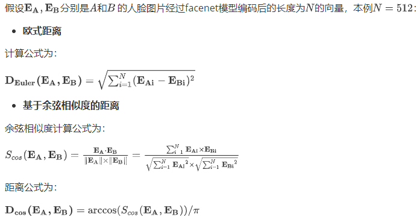
python程序为
#!/usr/bin/env python
# author:AnFany
# datetime:2020/12/30 16:51
# 计算向量之间的距离
import numpy as np
def compare_dis_em(em1, em2, mode='euler'):
em1 = np.array(em1)
em2 = np.array(em2)
if mode == 'euler':
# 欧式距离
diff = np.subtract(em1, em2)
dist = np.sum(np.square(diff), 1)
elif mode == 'cos':
# 基于余弦相似度的距离
dot = np.sum(np.multiply(em1, em2), axis=1)
norm = np.linalg.norm(em1, axis=1) * np.linalg.norm(em2, axis=1)
sim = dot / norm
dist = np.arccos(sim) / np.pi
return dist
5.2.5 图片人脸识别
根据自定义阈值，实现图片上人脸的识别，并在图片上进行身份标注，未识别的标注"unKnown"。
#!/usr/bin/env python
# author:AnFany
# datetime:2020/12/30 17:05
# 实现图片的人脸识别，并进行标注
# 第一步骤：人脸检测和对齐
from mtcnn.mtcnn import MTCNN
import cv2
import os
import numpy as np
from skimage import transform as trans
import shutil
# 第二步骤：人脸编码
import tensorflow.compat.v1 as tf
tf.disable_v2_behavior()
import facenet.src.facenet as facenet
import json
# 第三步骤：人脸识别
# 计算距离
import computer_distance_em as cde
# 待识别的人脸图片文件夹
FaceFigPath = r'C:\Users\Administrator\Desktop\mtcnn_figure\mtcnn_in'
# 输出人脸图片文件夹
OutFigPath = r'C:\Users\Administrator\Desktop\mtcnn_figure\mtcnn_out'
# 数据库人脸图片编码json字符串的路经
JsonPath = r'E:\facenet_database\em_face_json.json'
# 尺寸配置
ImageSize = 169 # 最好和数据库存储的一样
# 正脸关键点
Size_KeyPoints = {'1': [(112, 112), np.array([(38.2946, 51.6963),
(73.5318, 51.6963),
(56.0252, 71.7366),
(41.5493, 92.3655),
(70.7299, 92.3655)])]}
# 下载好的预训练模型
PreTrainModelDir = r'E:\facenet_model\20180408-102900\20180408-102900.pb'
# 阈值
Threshold = 0.5 # 距离小于阈值就视为是一个人
# 陌生人标注
Strname = 'unKnown'
KN='1'
# 图片数据标注函数
def plot_tip(figuredata, boxdata, txt, boxcolor=(220, 20, 20), boxw=2, txtcolor=(20, 220, 20)):
# 标注人脸框
box_data = cv2.rectangle(figuredata, boxdata[0], boxdata[1], boxcolor, boxw)
# 添加文字
font = cv2.FONT_HERSHEY_COMPLEX
x, y = boxdata[0][0], boxdata[0][1]
txt_data = cv2.putText(box_data, txt, (x, y), font, fontScale=0.6, color=txtcolor, thickness=1)
return txt_data
# 人脸识别
def face_figure_iden(inp=FaceFigPath, oup=OutFigPath, fs=ImageSize,
md=PreTrainModelDir, jp=JsonPath, tn=Threshold, keyn=KN,
rfs=Size_KeyPoints[KN][0], dstdata=Size_KeyPoints[KN][1], sn=Strname):
# 获取数据库编码
with open(jp, 'r') as g:
json_str = g.read()
face_code_dict = dict(json.loads(json_str))
# 人脸检测模型
detector = MTCNN()
# 人脸编码模型
sess = tf.Session()
# 下载预训练模型参数
facenet.load_model(md)
# 根据名称获取相应的张量
image_input_tensor = tf.get_default_graph().get_tensor_by_name("input:0")
embeddings_tensor = tf.get_default_graph().get_tensor_by_name("embeddings:0")
phase_train_tensor = tf.get_default_graph().get_tensor_by_name("phase_train:0")
# 开始遍历每个图片
for per_fig in os.listdir(inp):
per_fig_path = os.path.join(inp, per_fig)
# 读取图片数据，并转换通道
image_data = cv2.cvtColor(cv2.imread(per_fig_path), cv2.COLOR_BGR2RGB)
result_detection = detector.detect_faces(image_data)
# 存储识别到的人脸
face_set_signed = {}
# 没有识别到的人脸
fce_set_nosign = {}
fce_set_nosign[sn] = []
# 判断是否检测出人脸
if result_detection:
# 遍历获取到的每一个脸
for face in result_detection:
# 获取框的像素坐标
minx, miny, width, height = face['box']
maxx, maxy = minx + width, miny + height
# 将检测到的人脸图片截取下来
face_detection_data = image_data[miny:maxy, minx:maxx, :]
face_detection_data = cv2.cvtColor(face_detection_data, cv2.COLOR_RGB2BGR)
# 获得五个关键点的坐标
src_data = []
for k in ['left_eye', 'right_eye', 'nose', 'mouth_left', 'mouth_right']:
src_data.append(face['keypoints'][k])
# 计算仿射矩阵
tform = trans.SimilarityTransform()
res = tform.estimate(np.array(src_data), dstdata)
M = tform.params
# 应用仿射矩阵进行人脸对齐
align_face_data = cv2.warpAffine(image_data.copy(), M[:2, :], rfs,
flags=cv2.INTER_CUBIC, borderValue=(255, 255, 255))
# 进入人脸编码模型
code_face_data = cv2.resize(align_face_data, (fs, fs), interpolation=cv2.INTER_CUBIC)
# 图片数据预处理
code_face_data = facenet.prewhiten(code_face_data)
# 数据增加维度
code_face_data = code_face_data.reshape(-1, fs, fs, 3)
# 编码数据，长度为512
embeddings_data = sess.run(embeddings_tensor,
feed_dict={image_input_tensor: code_face_data,
phase_train_tensor: False})[0].tolist()
# 开始遍历数据库编码
person_dict = {}
for person in face_code_dict:
code_list = face_code_dict[person][str(fs)][keyn]
all_dis = []
for pco in code_list:
all_dis.append(cde.compare_dis_em(embeddings_data, pco))
# 计算均值
person_dict[person] = sum(all_dis) / len(code_list)
# 所有的均值都不小于阈值，则为陌生人，否则选择最小的作为身份
min_dis = sorted(person_dict.items(), key=lambda s:s[1])[0]
print(min_dis)
if min_dis[1] > tn:
# 陌生人
fce_set_nosign[sn].append([(minx, miny), (maxx, maxy)])
else:
face_set_signed[min_dis[0]] = [(minx, miny), (maxx, maxy)]
# 开始进行标注
image_data = cv2.cvtColor(image_data, cv2.COLOR_RGB2BGR)
if fce_set_nosign[sn]:
for data_f in fce_set_nosign[sn]:
image_data = plot_tip(image_data, data_f, sn)
if face_set_signed:
for fkey in face_set_signed:
image_data = plot_tip(image_data, face_set_signed[fkey], fkey)
# 保存为图片
cv2.imwrite(r'%s/%s.png' % (oup, per_fig), image_data, [int(cv2.IMWRITE_JPEG_QUALITY), 100])
return print('图片人脸识别完毕')
face_figure_iden()
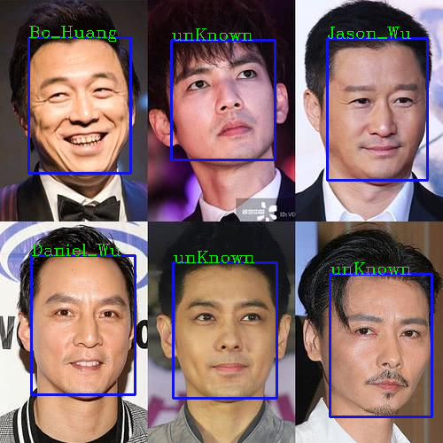
5.2.6 视频人脸识别
#!/usr/bin/env python
# author:AnFany
# datetime:2021/1/4 9:46
# 实现在线视频的人脸检测并标注
# 第一步骤：人脸检测和对齐
from mtcnn.mtcnn import MTCNN
import cv2
import os
import numpy as np
from skimage import transform as trans
import shutil
# 第二步骤：人脸编码
import tensorflow.compat.v1 as tf
tf.disable_v2_behavior()
import facenet.src.facenet as facenet
import json
# 第三步骤：人脸识别
# 计算距离
import computer_distance_em as cde
# 数据库人脸图片编码json字符串的路经
JsonPath = r'E:\facenet_database\em_face_json.json'
# 尺寸配置
ImageSize = 169 # 最好和数据库存储的一样
# 正脸关键点
Size_KeyPoints = {'1': [(112, 112), np.array([(38.2946, 51.6963),
(73.5318, 51.6963),
(56.0252, 71.7366),
(41.5493, 92.3655),
(70.7299, 92.3655)])]}
# 下载好的预训练模型
PreTrainModelDir = r'E:\facenet_model\20180408-102900\20180408-102900.pb'
# 阈值
Threshold = 0.6 # 距离小于阈值就视为是一个人
# 陌生人标注
Strname = 'unKnown'
KN='1'
# 实时视频的输入文件
CAPVideo = cv2.VideoCapture(0, cv2.CAP_DSHOW)
# 图片数据标注函数
def plot_tip(figuredata, boxdata, txt, boxcolor=(220, 20, 20), boxw=2, txtcolor=(20, 220, 20)):
# 标注人脸框
box_data = cv2.rectangle(figuredata, boxdata[0], boxdata[1], boxcolor, boxw)
# 添加文字
font = cv2.FONT_HERSHEY_COMPLEX
x, y = boxdata[0][0], boxdata[0][1]
txt_data = cv2.putText(box_data, txt, (x, y), font, fontScale=0.6, color=txtcolor, thickness=1)
return txt_data
# 视频人脸识别
def face_video_iden(fs=ImageSize,md=PreTrainModelDir, jp=JsonPath, tn=Threshold, keyn=KN,
rfs=Size_KeyPoints[KN][0], dstdata=Size_KeyPoints[KN][1], sn=Strname, cap=CAPVideo):
# 获取数据库编码
with open(jp, 'r') as g:
json_str = g.read()
face_code_dict = dict(json.loads(json_str))
# 人脸检测模型
detector = MTCNN()
# 人脸编码模型
sess = tf.Session()
# 下载预训练模型参数
facenet.load_model(md)
# 根据名称获取相应的张量
image_input_tensor = tf.get_default_graph().get_tensor_by_name("input:0")
embeddings_tensor = tf.get_default_graph().get_tensor_by_name("embeddings:0")
phase_train_tensor = tf.get_default_graph().get_tensor_by_name("phase_train:0")
# 开始遍历每个图片
while 1:
ret, image_data = cap.read()
# 读取图片数据，并转换通道
result_detection = detector.detect_faces(image_data)
# 存储识别到的人脸
face_set_signed = {}
# 没有识别到的人脸
fce_set_nosign = {}
fce_set_nosign[sn] = []
# 判断是否检测出人脸
if result_detection:
# 遍历获取到的每一个脸
for face in result_detection:
# 获取框的像素坐标
minx, miny, width, height = face['box']
maxx, maxy = minx + width, miny + height
# 将检测到的人脸图片截取下来
face_detection_data = image_data[miny:maxy, minx:maxx, :]
face_detection_data = cv2.cvtColor(face_detection_data, cv2.COLOR_RGB2BGR)
# 获得五个关键点的坐标
src_data = []
for k in ['left_eye', 'right_eye', 'nose', 'mouth_left', 'mouth_right']:
src_data.append(face['keypoints'][k])
# 计算仿射矩阵
tform = trans.SimilarityTransform()
res = tform.estimate(np.array(src_data), dstdata)
M = tform.params
# 应用仿射矩阵进行人脸对齐
align_face_data = cv2.warpAffine(image_data.copy(), M[:2, :], rfs,
flags=cv2.INTER_CUBIC, borderValue=(255, 255, 255))
# 进入人脸编码模型
code_face_data = cv2.resize(align_face_data, (fs, fs), interpolation=cv2.INTER_CUBIC)
# 图片数据预处理
code_face_data = facenet.prewhiten(code_face_data)
# 数据增加维度
code_face_data = code_face_data.reshape(-1, fs, fs, 3)
# 编码数据，长度为512
embeddings_data = sess.run(embeddings_tensor,
feed_dict={image_input_tensor: code_face_data,
phase_train_tensor: False})[0].tolist()
# 开始遍历数据库编码
person_dict = {}
for person in face_code_dict:
code_list = face_code_dict[person][str(fs)][keyn]
all_dis = []
for pco in code_list:
all_dis.append(cde.compare_dis_em(embeddings_data, pco))
# 计算均值
person_dict[person] = sum(all_dis) / len(code_list)
# 所有的均值都不小于阈值，则为陌生人，否则选择最小的作为身份
min_dis = sorted(person_dict.items(), key=lambda s:s[1])[0]
print(min_dis)
if min_dis[1] > tn:
# 陌生人
fce_set_nosign[sn].append([(minx, miny), (maxx, maxy)])
else:
face_set_signed[min_dis[0]] = [(minx, miny), (maxx, maxy)]
# 开始进行标注
image_data = cv2.cvtColor(image_data, cv2.COLOR_RGB2BGR)
if fce_set_nosign[sn]:
for data_f in fce_set_nosign[sn]:
image_data = plot_tip(image_data, data_f, sn)
if face_set_signed:
for fkey in face_set_signed:
image_data = plot_tip(image_data, face_set_signed[fkey], fkey)
# 保存为图片
image_data = cv2.cvtColor(image_data, cv2.COLOR_RGB2BGR)
cv2.imshow('object detection', image_data)
if cv2.waitKey(25) & 0xFF == ord('q'):
cv2.destroyAllWindows()
break
cap.release()
cv2.destroyAllWindows()
face_video_iden()
示图：
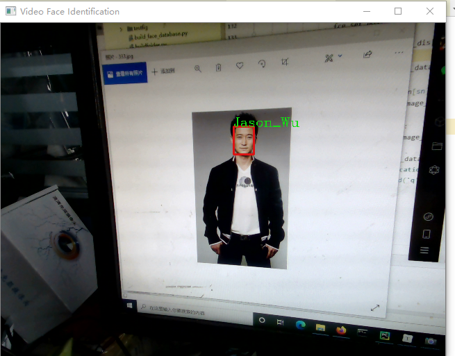
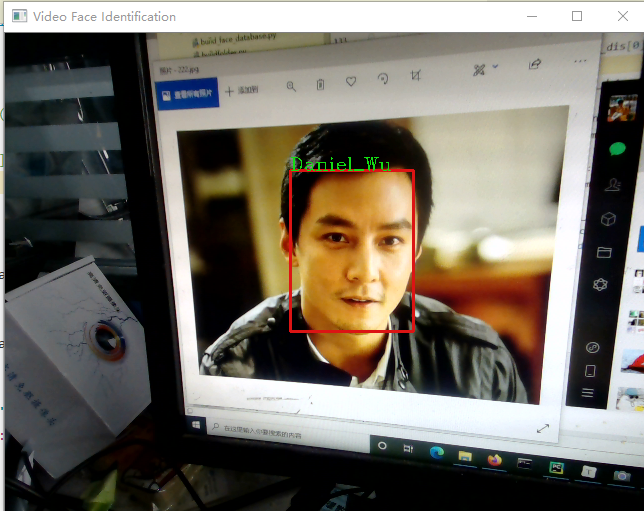
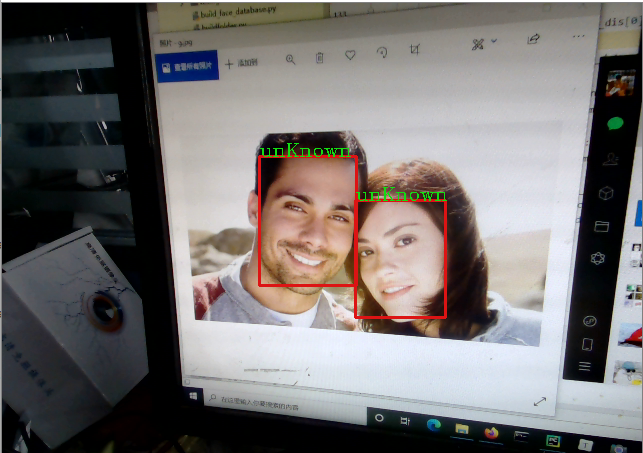